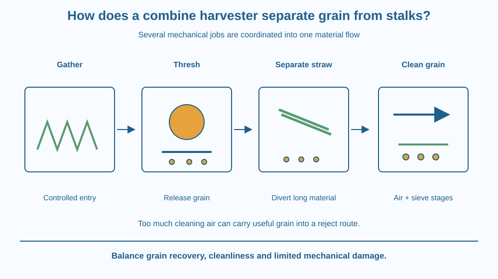

Explain the different jobs combined in a grain harvester. Distinguish cutting, threshing, separation and cleaning. Trace grain and lighter crop material through different routes and predict why adjusting one stage can change grain loss or impurity in the final collection.
A combine moves through a standing cereal crop and collects grain while returning other material to the field or a separate route. The machine has not dissolved the stalks or turned all the crop into grain. It performs several mechanical separations in sequence.
The key mystery is how grain attached to heads becomes loose, then becomes separated from a much larger volume of plant material. One mechanism cannot explain every stage. Following the material through the machine reveals why the word combine is appropriate: several jobs are coordinated.
A combine's front system gathers and cuts the crop or collects material prepared by a different harvesting method. The exact header varies with crop and machine. Its first job is to bring material into the processing path in a controlled way.
Threshing releases grain from the harvested heads using mechanical action. In common designs, material passes through moving components that rub or strike it against another surface. This detaches grain without requiring the whole stalk to be ground into powder.
Separation then removes much of the longer straw and other plant material from the released grain. Walkers, rotors or other mechanisms can contribute, depending on the machine. The design tries to recover grain while allowing bulky material to follow another route.
Cleaning deals with smaller impurities mixed with grain. Airflow can carry lighter chaff differently from denser grain, while sieves help sort material by size and passage behaviour. The airflow and sieve stages are coordinated rather than interchangeable.
The term winnowing describes separation using differences in how material responds to moving air. Mass, shape and exposed area matter. A light broad chaff piece can be carried away more readily than a compact grain under suitable conditions.
A stronger cleaning airflow is not always better. Too little can leave impurities, while too much can carry useful grain away. Similarly, an aggressive threshing setting may release more grain but damage it or increase unwanted material entering later stages.
The machine therefore balances recovery, cleanliness and damage. Crop condition, moisture, variety and feed rate influence the suitable settings. There is no universal speed or airflow value correct for every Indian crop and combine.
This is different from one kitchen mesh retaining tea leaves. A combine uses a sequence of release and separation mechanisms, including aerodynamic behaviour. A sieve may be one component, but it does not by itself explain how attached grain becomes detached or how the entire crop stream is handled.
Draw a flow chart with four boxes: gathering, threshing, separating and cleaning. Put a crop head entering the first and separate grain and residue routes leaving later boxes.
At threshing, change attached grain symbols into loose grain symbols without changing their identity. At cleaning, draw a light chaff path diverted by air while grain follows a different path.
Add a small loss arrow at each relevant stage. The design target is not simply producing a neat final box; it is doing so while limiting grain left in straw, grain blown out and damaged grain. The flow chart makes those trade-offs visible.
The SVG shows crop entering a header, grain being released at a threshing region and separate routes for straw, chaff and collected grain. A cleaning-air arrow acts across the mixed stream.
Labels identify the purpose of each stage rather than a particular manufacturer's internal layout. Grain symbols remain recognisable throughout so the diagram does not imply that threshing manufactures grain from stalk tissue.
A lower comparison shows insufficient and excessive cleaning airflow as possible problems. It is qualitative and does not provide operating instructions or numerical settings for real farm machinery.

Combine harvesting is familiar in several grain-growing regions of India. The visible machine can hide a complex internal material flow. Understanding the sequence helps explain why harvest performance depends on crop condition and adjustment rather than the machine's size alone.
Traditional threshing and winnowing perform some of the same jobs separately. The combine coordinates them within a continuous system. This continuity creates a requirement to match the rate of one stage to the capacity of the next.
Students must stay away from operating harvesters, moving belts and threshing equipment. Never collect samples near a working machine for this lesson. Photographs and paper diagrams are sufficient.
Use paper, a pencil and two sizes of drawn symbols. No fan, grain dust or moving equipment is needed.
Explain what each stage changes. The model does not demonstrate actual grain aerodynamics or provide machine settings. Do not blow paper dust or real grain material into the air; a drawn arrow represents the airflow safely.
Suppose a threshing stage feeds material faster than the cleaning stage can handle. What kinds of problems might appear even if each component works under lighter loading?
Now imagine increasing the cleaning airflow. Explain why improved removal of light chaff might eventually be accompanied by grain loss. The design goal is selective separation, not maximum movement of every particle.
What is the purpose of threshing?
Answer: A — Threshing uses mechanical action to detach grain from the crop heads.
Why can air help separate chaff from grain?
Answer: B — Differences in mass, shape and exposed area affect how materials move in airflow.
Cleaning airflow becomes excessive. What problem may appear?
Answer: C — A separation system can lose target material if the airflow carries it into the reject route.
Create a troubleshooting chart connecting three observations with possible stages: grain still attached to heads, excessive chaff in collected grain and grain leaving with the light-material stream.
Give a mechanism-based possibility for each without claiming one certain diagnosis. Include a warning that actual inspection and adjustment belong to trained operators. Your chart should show the difference between understanding a process and approaching dangerous machinery to test it.
Making one stage more aggressive can worsen the overall result. Extra threshing can increase damage, and extra air can remove useful grain. A combine's performance depends on a coordinated balance, showing why engineering optimisation is different from turning every control to its maximum setting.
A combine coordinates grain release, straw separation and air-and-sieve cleaning; useful performance balances recovery, cleanliness and limited damage.